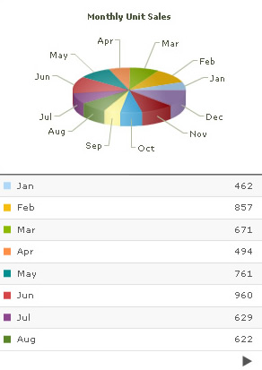

FusionCharts Grid Component helps you display single series FusionCharts data in a tabular format. You can combine the grid component with any single series chart to form a good looking combo.
- Uses the same single series XML/JSON structure as any other FusionCharts chart. So, your chart and grid can use the same XML/JSON data source.
- Allows client side paging of data. So, your users can iterate through different pages of tabular data without having to refresh the page.
- Uses cosmetic properties from the chart XML/JSON data by default. However, you can over-ride the cosmetic properties specified in XML/JSON document by specifying individual properties for the Grid component.
Shown below is an example of Grid component used with a Pie 3D chart and Column 2D Chart.
 |
 |
Pie 3D Chart with Grid Component |
Column 2D Chart with Grid Component |
You can treat the Grid component like any other FusionCharts chart. It has all the functionalities offered by other charts, like dynamic resizing, XML/JSON data source, JavaScript support, can be loaded inside other Flash movies etc.
FusionCharts Grid component can not be exported to image/pdf.
Let's next see how to use the Grid component.